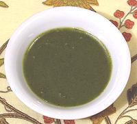

|
Laser - Stem / Root / JuiceCalifornia / Rome | ||||
| Makes: Effort: Sched: DoAhead: |
1-1/2 oz ** 45 min Yes |
A problem reconstructing recipes from Imperial Roman is that an important flavoring is extinct - the giant fennel called laser (Greek silphium). For the resin we use asafoetida, just as the Romans did by Nero's day - inferior, but available. | |||
| What about stems, roots and juice which were also used? With only a few hints on flavor, this is my take on faking it up - and it works rather well. Unfortunately I don't know any 1st century Romans who could test it for accuracy. Start with about 1/2 teaspoon per cup of sauce and adjust to your taste. | |||||
|
|
2 1/2 1/2 |
# t t |
Fennel (1) Pure Olive Oil Asafoetida (2) |
Make: - (45 min)
|